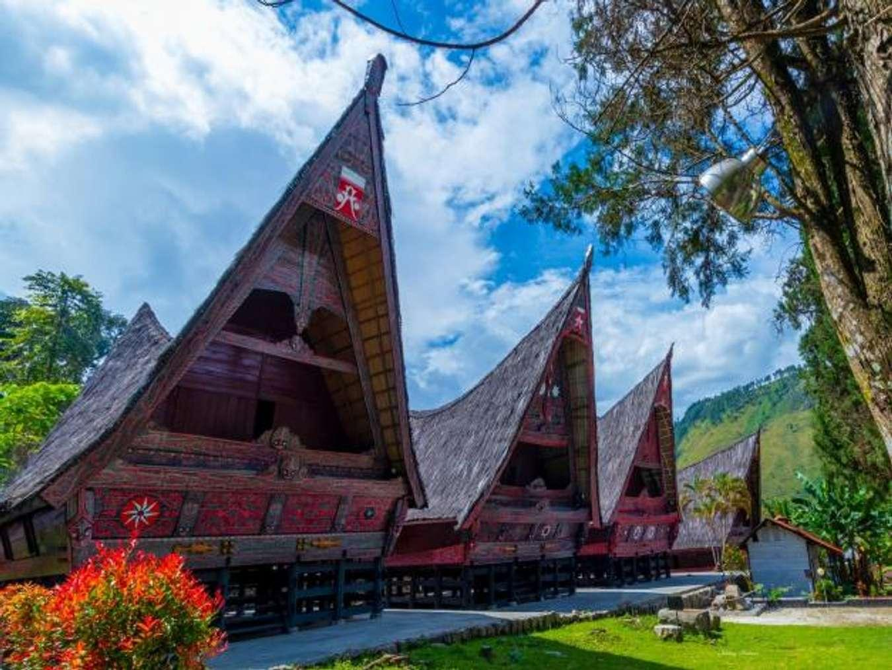
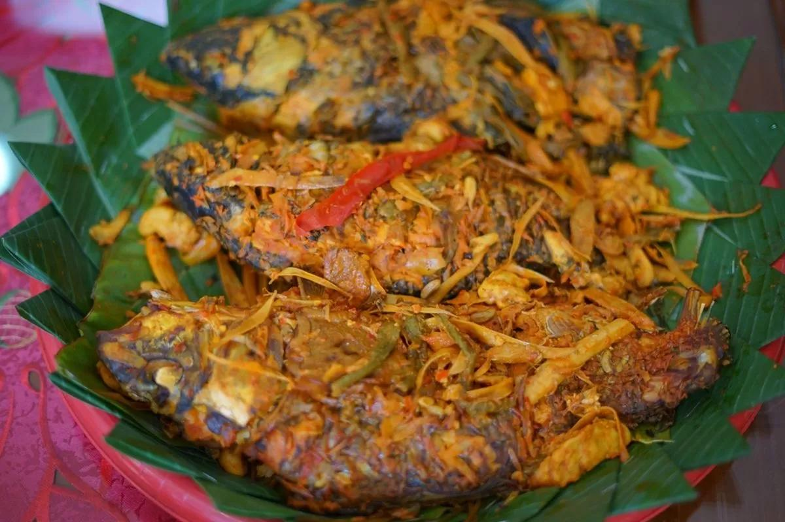
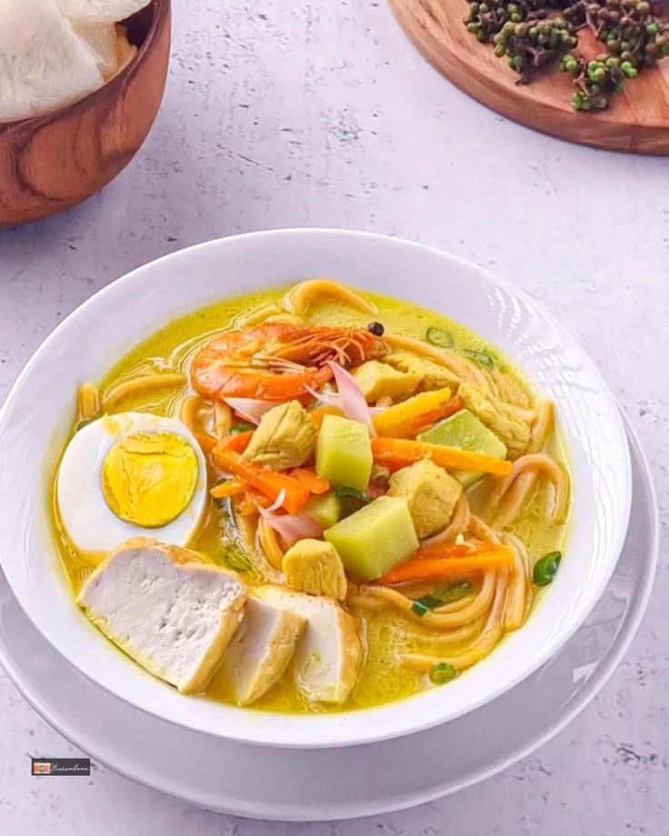
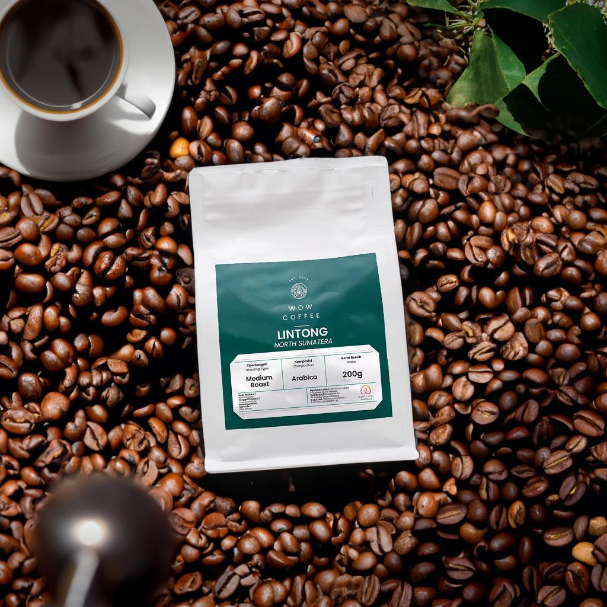
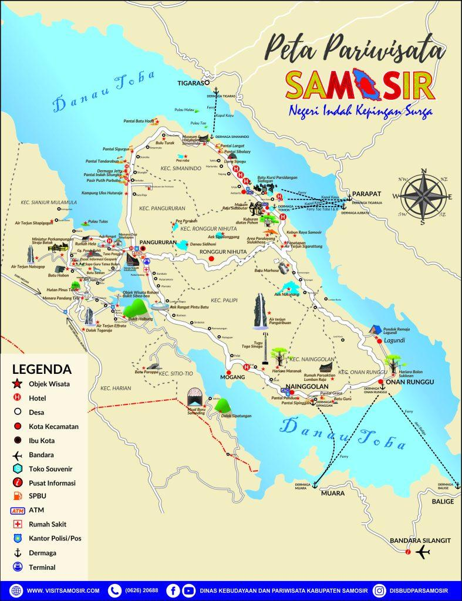
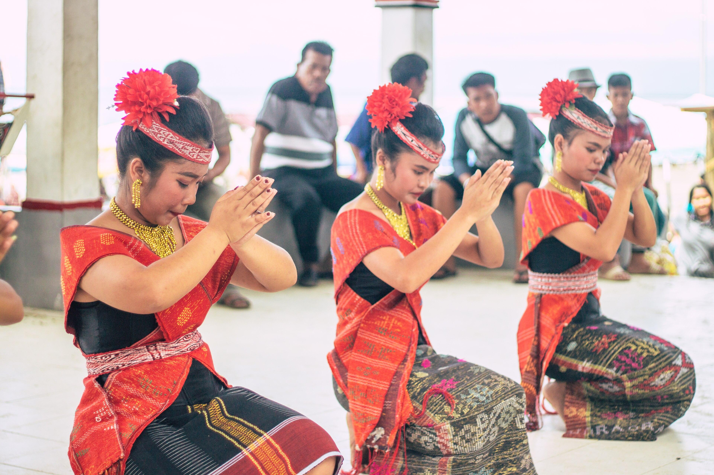
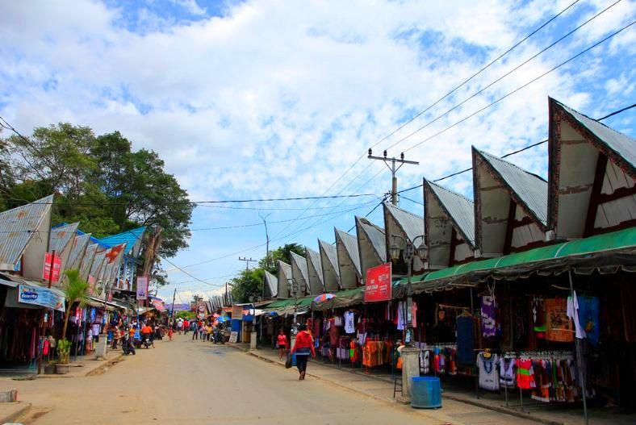

UNESCO Global Geopark
Recognized as a UNESCO Global Geopark with extraordinary geological heritage and breathtaking volcanic landscapes.
Discover stunning landscapes, rich Batak culture, authentic cuisine, and unforgettable journeys around Lake Toba.
TobaVerse is an all-in-one digital tourism platform that connects travelers with the beauty, culture, and unique experiences of Lake Toba through one seamless website.
TobaVerse helps travelers discover breathtaking landscapes, authentic Batak culture, local culinary delights, travel routes, accommodation information, interactive maps, and local events in one integrated platform.
Discover iconic destinations, hidden gems, and scenic viewpoints around Lake Toba.
Learn about Batak traditions, history, architecture, and cultural heritage.
Organize your itinerary, travel routes, and activities more efficiently.
Discover breathtaking landscapes, rich Batak heritage, and unforgettable adventures in one extraordinary destination.
Recognized as a UNESCO Global Geopark with extraordinary geological heritage and breathtaking volcanic landscapes.
Discover authentic Batak traditions, historic villages, cultural performances, and timeless local wisdom.
Enjoy panoramic mountains, crystal-clear waters, lush forests, waterfalls, and unforgettable scenic viewpoints.
Experience trekking, cycling, island hopping, boating, and exciting outdoor adventures around Lake Toba.
From discovering destinations to planning your journey, TobaVerse provides everything you need for a seamless travel experience.
Browse famous attractions, hidden gems, and recommended destinations.
Explore DestinationsuDiscover Batak traditions, historical sites, and local heritage.
Discover CultureExperience authentic Batak cuisine and local coffee.
Explore CuisineBuild personalized travel itineraries for your perfect vacation.
Plan JourneyNavigate destinations with interactive tourism maps.
Open MapStay updated with festivals, cultural celebrations, and local activities.
View EventsDiscover the traditions, history, architecture, music, dance, and local wisdom of the Batak people that have been preserved for generations.

Lake Toba is home to one of Indonesia's richest cultural heritages. Explore traditional Batak houses, sacred villages, local ceremonies, Tortor dance, Gondang music, and unique stories passed down through generations.
Enjoy traditional Batak cuisine, local coffee, fresh seafood, and unforgettable culinary experiences around Lake Toba.

A traditional Batak fish dish cooked with rich spices such as andaliman, turmeric, and local herbs.
Explore More
A signature Batak noodle dish served with rich traditional spices and fresh local ingredients, offering an authentic taste of North Sumatra.
Explore More
Experience one of Indonesia's finest Arabica coffees grown in the highlands surrounding Lake Toba.
Explore MoreOrganize your destinations, estimate travel time, discover recommended routes, and build your own personalized itinerary for an unforgettable journey.
Easily locate attractions, restaurants, villages, viewpoints, ports, and tourism facilities through one interactive map.

Join cultural festivals, traditional performances, local markets, and exciting community events throughout the year.

Experience Lake Toba's biggest cultural celebration featuring traditional performances, music concerts, culinary exhibitions, and local heritage.
Explore More
Witness the beauty of Batak traditions through graceful Tortor dances, Gondang music, and authentic cultural performances.
Explore More
Explore vibrant local markets offering Batak textiles, handmade souvenirs, traditional snacks, and artisan products.
Explore MoreDiscover breathtaking destinations, rich Batak culture, and unforgettable experiences across Lake Toba.